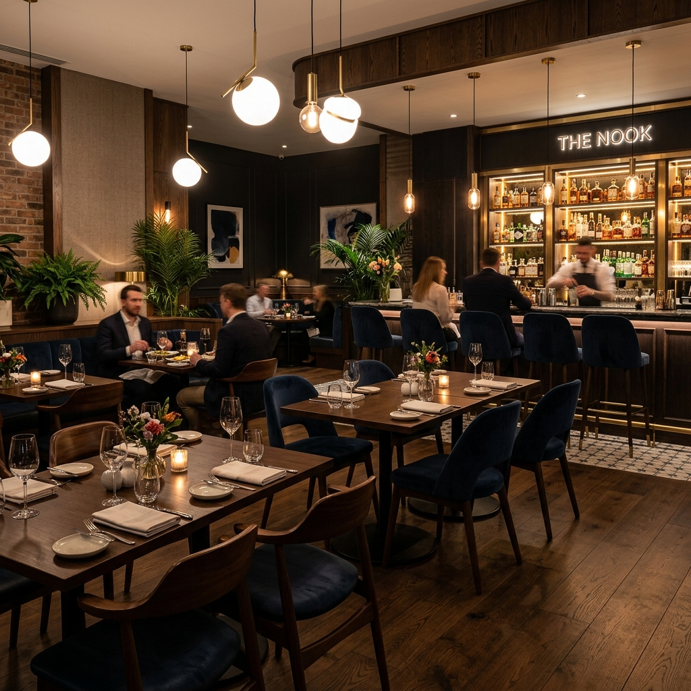

Herzliche Atmosphäre,
Erlesene Küche
Erleben Sie einen unvergesslichen Abend im Herzen von Köln, geprägt von unserem stilvollen, modernen Ambiente und einer sorgfältig zusammengestellten, feinen Speisekarte.
Moderne Küche mit dem Fokus auf das Wesentliche
Wir im NOVO² Restaurant glauben, dass Essen nicht nur ein Bedürfnis, sondern ein Moment des puren Genusses sein sollte. Direkt im Novotel Köln City bieten wir Ihnen eine entspannte, einladende und komfortable Umgebung abseits der Hektik des Alltags.
Bei unseren Gerichten setzen wir auf ein bewusst überschaubares Menükonzept („klein aber fein“), das Qualität und Geschmack in den Vordergrund stellt. Wir servieren klassische deutsche und europäische Spezialitäten mit modernen Nuancen, frisch für Sie zubereitet.
Erstklassiger Hotelkomfort
Ruhiger Service und professionelle Qualität im modernen Stil.
Bistro & Bar Erlebnis
Ausgezeichnete Cocktails, feine Weine und Kaffeespezialitäten.

Wir freuen uns auf
Ihren Besuch
Sie finden uns direkt im Gebäude des Novotel Köln City an der Bayenstraße. Kontaktieren Sie uns gerne für Reservierungen oder weitere Fragen.
Unsere Adresse
Bayenstraße 51, 50678 Köln, Deutschland
Telefonnummer
Öffnungszeiten
| Montag - Freitag | 10:30 - 21:30 Uhr |
| Samstag - Sonntag | Geschlossen |